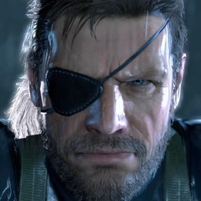
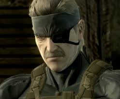
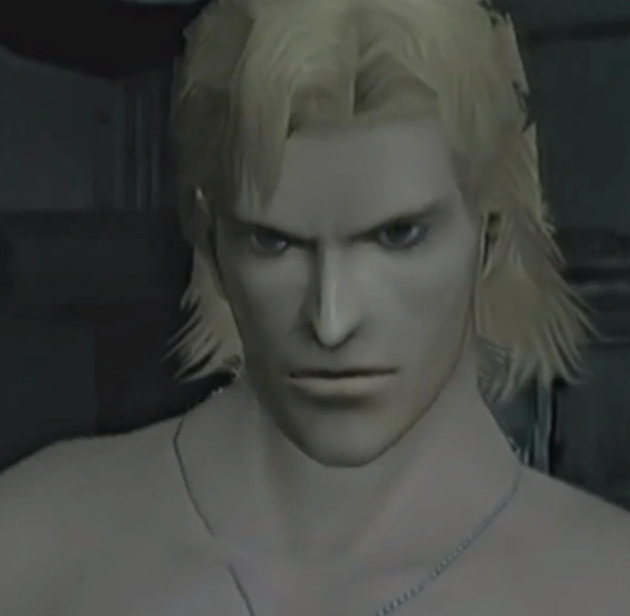
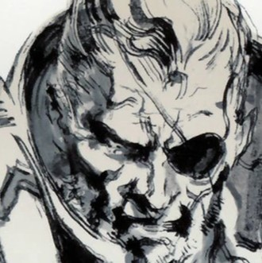
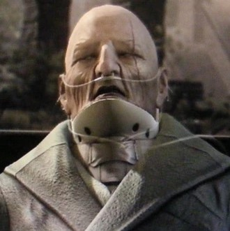
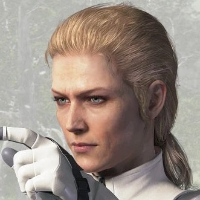

-
Big Boss
Descrição
Big Boss, nome real John, também conhecido como Jack, e anteriormente conhecido como Naked Snake, Vic Boss, Ishmael, Saladin, ou simplesmente Snake, foi um renomado comandante mercenário e operacional das forças especiais. Ele fundou a Unidade das Forças Especiais do Exército dos Estados Unidos FOXHOUND, junto com a empresa mercenária Militaires Sans Frontières, e foi um dos membros fundadores dos Patriots. Big Boss posteriormente estabeleceu os estados militares de Outer Heaven e Zanzibar Land como bases para suas empresas, a fim de realizar suas ambições de criar uma nação para soldados. Considerado por alguns como "O Maior Guerreiro do Século 20", ele ganhou apelidos como "o Soldado Lendário" e "O Mercenário Lendário", temido em combate por amigos e inimigos como um herói e um louco
-
Solid Snake
Descrição
Solid Snake foi uma das crianças nascidas do projeto Les Enfants Terribles de 1972. Ele foi criado como um clone do mundialmente conhecido soldado Big Boss, junto com seus irmãos Liquid Snake e Solidus Snake. Inicialmente um Boina Verde, Snake foi posteriormente introduzido na Unidade de Forças Especiais de Alta Tecnologia FOXHOUND na década de 1990, enquanto era comandado por Big Boss. Repetidamente encarregado de desarmar e destruir a última encarnação do Metal Gear, um tanque bípede armado com armas nucleares, Snake evitaria três vezes uma potencial catástrofe nuclear, tornando-se um famoso herói de guerra.
-
Liquid Snake
Descrição
Liquid Snake, nome real Eli, também conhecido como White Mamba (em Kikongo: "Nyoka ya Mpembe"), McDonell/Master Miller, ou simplesmente Liquid, foi o líder da FOXHOUND durante o Incidente Shadow Moses. Ele foi clonado do DNA de Big Boss como parte do projeto Les Enfants Terribles, junto com seus irmãos Solid Snake e Solidus Snake. Liquid foi levado a acreditar que havia sido criado para expressar os traços genéticos recessivos de Big Boss e, como tal, era "inferior" ao Solid Snake, que supostamente recebeu os genes dominantes de Big Boss. Liquid, portanto, tinha um forte ressentimento em relação a Solid e desejava derrotá-lo em combate, reivindicando o que ele sentia ser seu direito de nascença e, assim, provando sua superioridade.
-
Solidus Snake
Descrição
Solidus foi o terceiro "Filho de Big Boss" criado pelos Patriots em 1972, através da clonagem de células somáticas, como parte do projeto Les Enfants Terribles. A fase inicial do projeto produziu clones gêmeos geneticamente diversos, um expressando os traços genéticos "inferiores" de Big Boss e o outro os traços "superiores" de Big Boss, o que levou à saída de Big Boss dos Patriots em 1972. Assim, a organização exigia um clone perfeito a fim de manter uma figura de proa para sua organização na imagem de Big Boss.
-
Major Zero
Descrição
Antes de criar a FOX, David Oh serviu na Layforce com a The Boss, participando de vários ataques no Egito. Eles eram amigos íntimos de um colega de Layforce que morreu em 30 de dezembro de 1941, com Oh pessoalmente entregando seu broche de adaga alada para The Boss. Ele e The Boss também serviram no SAS britânico. Oh mais tarde conheceu e recrutou o assassino húngaro Skull Face para o SAS depois que este desertou da União Soviética. Impressionado com suas habilidades como assassino e estrategista militar, Oh rapidamente promoveu Skull Face a seu oficial executivo. Durante sua carreira posterior no MI6, ele foi referido como "O". Oh finalmente se juntou à CIA, sob o departamento de planejamento confidencial
-
The Boss
Descrição
The Boss, também conhecida como The Joy, A Mãe das Forças Especiais, Mercury Lady e Voyevoda, (Russo para “Senhora da Guerra”), foi a “última criança dos Philosophers” e mentora de Naked Snake. Ela foi fundadora líder da Cobra Unit, onde era conhecida como “The Joy” (“A Alegria”), entretanto, quando eles foram dissolvidos ao final da Segunda Guerra Mundial, ela ganhou o codinome de “The Boss”. Junto com Naked Snake, ela desenvolveu a técnica CQC.